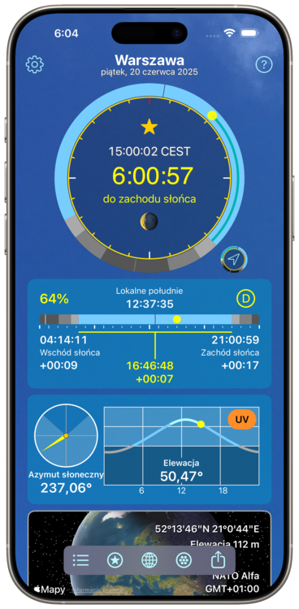

MAX Dzień
- iOS
Ile zostało światła dziennego?
Napisałem tę aplikację, aby wrócić do domu przed zmrokiem podczas jazdy na rowerze. Na pierwszy rzut oka sprawdź, ile czasu pozostało do zachodu słońca, i ustaw powiadomienia, aby ostrzec z wyprzedzeniem. Twoi bliscy nie będą się już martwić ani narzekać.
Potem dodałem wszystko na energię słoneczną, tak dla zabawy. Możesz monitorować wschód, południe i zachód słońca w dowolnym miejscu na Ziemi. Możesz porównywać lokalizacje, robić filmy i generować raporty porównujące wybraną lokalizację z miejscami na całym świecie.